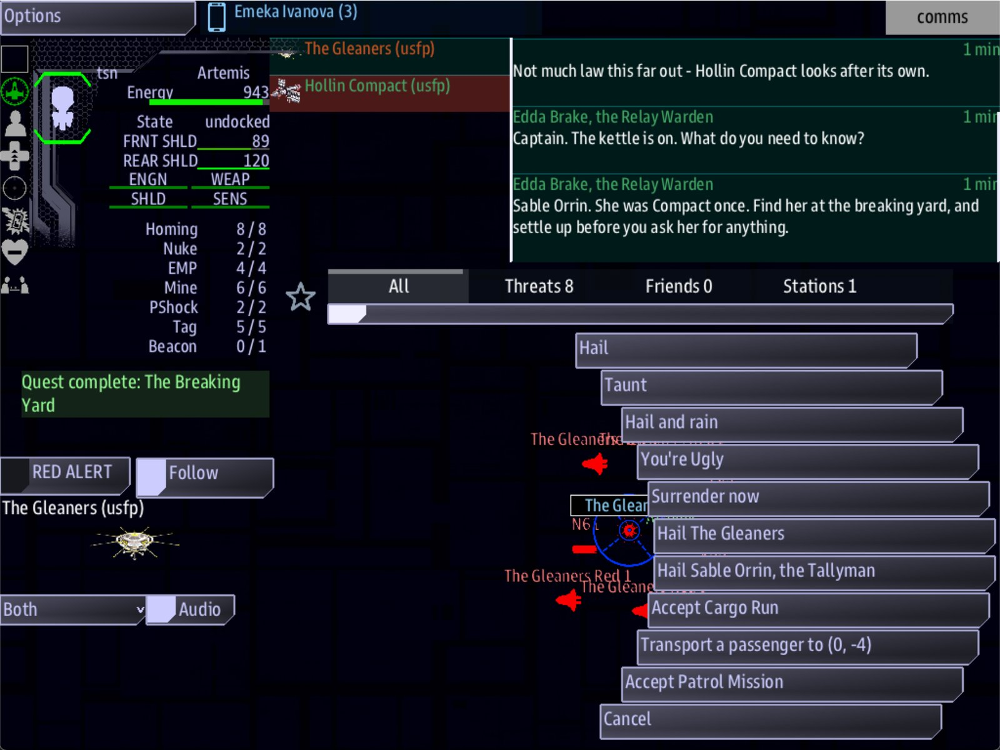

Class 5, Lecture 8 - Captains and rivals¶
What you will have at the end¶
Two people in The Kestrel Verge with names, and opinions of their own. Edda Brake has kept the lamp at Kestrel Relay for thirty years. Sable Orrin keeps the Gleaners' books. The crew can call each of them, and each of them remembers how the last call went.
What a captain thinks of the crew is a standing of its own. It is not the standing of the side they belong to. A crew can be at war with the Gleaners and on good terms with their bookkeeper, and a crew that cheats her has made a rival who greets them as one.

The Gleaners' station on Comms, with the button Hail Sable Orrin, the Tallyman.You write a Captains chapter with two records, and nine short records in the Dialogue
chapter. All of it goes in kestrel_verge.amd.
The video¶
About 6 minutes. Subtitles are available in the player.
Before you start¶
- Your
MyUniversemission as Lecture 7 left it.kestrel_verge.amdmatchesc5-07-narrative-and-goals\example\. sbs lint MyUniversesaysclean.- The game closed, and the save deleted:
C:\Cosmos\data\missions\common_data\saves\universe_save_the_kestrel_verge_1.yaml.
Words for this lecture:
| Word | Meaning |
|---|---|
| Captain | A named person who belongs to one of your sides. The crew can hail them where they are found |
| Personal standing | What one captain thinks of one ship. A number from -100 to 100 that starts at 0, worked out the way a side's standing is |
| Rival | In this page: a captain whose personal standing with the crew has fallen below a line you chose |
Step 1 - What a captain is¶
A side is an institution. It has a home, stations, ships and work to offer. A captain has none of those. A captain is three things:
- A name on a button. When Comms selects a station in a system where the captain is found, there is a button to hail them, beside the buttons for the station itself.
- A voice. The hail opens a record in your Dialogue chapter, written the way you wrote a side's hail in Lecture 4.
- A memory. The captain has
Values:of their own, and the ship has a standing with them that only their own conversations change.
A captain is not a ship. The game does not put one in space for them, and nothing of theirs can be shot at. If you want the crew to meet a captain's ship, that is a landmark with guards, from Lecture 5, and the captain's voice at a station in the same system.
Step 2 - The Captains chapter¶
Open kestrel_verge.amd. Find the note that begins // ---- Job types, above the Jobs
chapter. In front of that note, add a new chapter. Leave an empty line above and below.
## [Captains](captains)
### [Edda Brake](edda)
---
Side: hollin
Title: the Relay Warden
Values: honest 40, kind 20
Roams: 0, 0
---
She has kept the lamp at Kestrel Relay for thirty years, and she remembers every ship that passed it.
### [Sable Orrin](sable)
---
Side: gleaners
Title: the Tallyman
Values: honest 40, by-the-book 30
Roams: -3, -2
---
The Gleaners' bookkeeper. She knows what every wreck in the Breakers fetched, and who was aboard when it stopped being a ship.
| Line | What it means |
|---|---|
## [Captains](captains) |
The chapter. The key must be captains |
### [Edda Brake](edda) |
The captain's name, then their key. The key is what a conversation and a deed use to name them |
Side: |
The key of the side they belong to. Their card on the crew's screen takes that side's color |
Title: |
What they are called. It follows the name on the button: Hail Edda Brake, the Relay Warden |
Values: |
What this person cares about. The same fourteen traits as a side, from Lecture 4 |
Roams: |
The system where they are found. For more than one, put a semicolon between: Roams: -3, -2; 0, 0 |
| The line below the fence | Who they are. For you and your co-writers |
Two things about those lines.
A captain's values are their own. The Gleaners value fearsome and resourceful.
Their bookkeeper values honest and by-the-book. A crew that bullies its way into the
Gleaners' good opinion has done nothing for hers. That gap is where the character is.
Roams: needs a station. The button is on a station. Any station in the system will
do, whoever owns it: Edda's is on Hollin Compact and on Kestrel Relay. But in a system
with no station there is nothing to carry the button, and the captain cannot be reached.
The Bone Pile has no station. Do not send a captain to roam there.
Step 3 - A captain's voice¶
A captain talks through the Dialogue chapter, like a side. The one difference is the
word after Speaker:. It is the captain's key.
Go to the end of the file and add Edda's four records.
### [Edda Brake](edda_hail)
---
Speaker: edda
When: comms
---
%{standing >= 20} Captain. The kettle is on. What do you need to know?
%{standing < 20} Warden Brake, Kestrel Relay. Keep it short. I have a lamp to tend.
- [Give her the news from down the lanes](edda_news) ; earns edda honest 20, earns edda kind 20
- [Ask who keeps the Gleaners' books](edda_tip) if standing >= 20
- [Sign off](edda_bye)
### [News](edda_news)
---
Speaker: edda
---
% Thirty years, and you are the first to stop and tell me anything. Come back when you want something.
### [The Tallyman](edda_tip)
---
Speaker: edda
---
% Sable Orrin. She was Compact once. Find her at the breaking yard, and settle up before you ask her for anything.
### [Edda Out](edda_bye)
---
Speaker: edda
---
% Mind the lanes, captain.
Three things here are new, and all three are about the word standing.
| Where | What standing means there |
|---|---|
%{standing >= 20} in a record whose speaker is a captain |
The ship's standing with that captain, not with their side |
earns edda honest 20 |
A deed with the captain. The first word is the captain's key, where a side's key went before |
if standing >= 20 after an answer |
A guard on an answer. The crew is offered that answer only when it is true |
A guard on an answer is new to this class. It goes after the round brackets and
before any ;, and it starts with the word if. It is one comparison, the same as a
guard on a line. Edda will not gossip with a stranger: her second answer is not on the
screen at all until the crew has told her the news once.
Besides standing, an answer's guard can read credits, or any of the fourteen traits.
if credits >= 200 offers an answer only to a crew that can pay.
Step 4 - A captain who can be crossed¶
Now Sable. Add her five records under Edda's.
### [Sable Orrin](sable_hail)
---
Speaker: sable
When: comms
---
%{standing >= -20} Orrin. I keep the yard's books. If you owe, pay. If you do not, be brief.
%{standing < -20} You. There is a page with your ship's name on it, captain, and it does not balance.
- [Pay the yard's docking toll](sable_paid) ; costs 100 credits, earns sable honest 20, earns sable by-the-book 20
- [Tell her to bill the Compact](sable_crossed) ; earns sable liar 25, earns sable resourceful 25
- [Ask who was aboard the Tern](sable_tip) if standing >= 20
- [Sign off](sable_bye)
### [Paid](sable_paid)
---
Speaker: sable
---
% Entered. You would be surprised how few captains understand that this is all I want.
### [Crossed](sable_crossed)
---
Speaker: sable
---
% The Compact does not pay our tolls. I will write that down, with your name beside it.
### [Forty-One](sable_tip)
---
Speaker: sable
---
% Forty-one aboard when we found her, and alive. That is all the page says. It is more than the yard would thank me for.
### [Sable Out](sable_bye)
---
Speaker: sable
---
% Close the channel behind you.
This is how you write a rival. There is no switch for it. A rival is a captain whose standing has gone below a line, and the line is wherever your guards put it. Here it is -20.
| The crew's standing with Sable | What they get |
|---|---|
| Below -20 | The cold greeting. No way to ask about the Tern |
| -20 to 19 | The plain greeting. No way to ask about the Tern |
| 20 or more | The plain greeting, and the answer that asks |
The answer that crosses her names the far ends of the two traits she values: liar
against her honest, resourceful against her by-the-book. Once is enough. From 0 it
puts the ship at -25.
Why her greeting has two lines and not three. A guard is one comparison. You cannot
write "from -20 to 19" in one. So two guarded lines split the crew into two groups, and
the third group is made by the guard on an answer. If you add a third line,
%{standing >= 20}, a friend can be given either it or the plain line, at random,
because both are true for them.
About
Rival when:. The Open Universe's own files and its writer's walkthrough give a captain one more line,Rival when: standing < -20. Lint accepts it. Today the game does not read it: nothing happens when it comes true. Do not rely on it. A rival is made of guards, as you have just made one.
Step 5 - Check it¶
Save the file.
Each row below was made on purpose, one change to the finished file, then linted, then played.
Mistakes lint finds
| The mistake | What the game does | What lint says |
|---|---|---|
## [Captains](people) |
No captains. No station has a button to hail one | A warning on every line of every captain: "this record is being read as a hostile because of where it sits" (unknown-field) |
| A captain with two hashes | That captain is lost, and every captain under them | A warning on each of their lines: "this record is being read as a map" (unknown-field) |
Speaker: sabel on her hail |
No button to hail her | A warning: "gives its voice to sabel, who is not in the cast" (dangling-speaker) |
A captain with the same key as a side: ### [Sable Orrin](gleaners) |
Her button is there, and it opens the side's hail. Her own answers are never seen | The same warning, on each of her records that still says Speaker: sable (dangling-speaker). And one on each deed that still says earns sable: "sable is not a side in this mission" (earns-unknown-side) |
Side: gleaner, misspelled |
The captain still works: her button, her greetings and her answers were all there | A warning: "Side: gleaner - gleaner is not a side in this mission", with the keys you did declare (dangling-side) |
when for if on an answer: (sable_tip) when standing >= 20 |
The answer is offered to everybody, a rival too | A warning: "neither a condition (if ...) nor an outcome (after a ;), so it is ignored" (choice-tail-ignored) |
Two comparisons in one guard: if standing >= 20 and credits >= 100 |
The answer is never offered | Two warnings: "not a condition the game can read, so this choice is never offered" (unreadable-guard, guard-joined) |
The guard after the outcomes: ; costs 100 credits, earns sable honest 20, earns sable by-the-book 20 if standing < 40 |
The answer is offered to everybody, and the last deed is lost: paying the toll gives a standing of 11, where it should give 20 | Two warnings: "the if is after the ;, so it is read as part of earns" (guard-after-outcome), and "is not a trait a side can value" about the words it swallowed (earns-unknown-trait) |
Mistakes lint cannot see
Lint says clean for every one of these.
| The mistake | What the game does |
|---|---|
No Roams: line |
No button anywhere. The captain cannot be reached |
Roams: a system with no station: Roams: -4, -3 |
The same |
No Values: line on a captain who has a Side: |
The captain is read against her side's Values:. Sable's side values fearsome and resourceful, so the deeds this page writes for her, in honest and by-the-book, left the standing at 0: no friend's answer, no rival's greeting. A deed of earns sable fearsome 35 moved it to 35, and the friend's answer appeared |
A deed with a trait the captain does not value: earns sable fearsome 20 |
The same: standing does not move |
The side's key in a captain's deed: earns gleaners honest 20 |
The deed goes to the side. The ship's standing with Sable stays at 0, and its standing with the Gleaners moves, here down by 8 |
The side's key after Speaker: on her hail: Speaker: gleaners |
No button to hail her |
No When: comms on her hail |
No button to hail her |
A word misspelled in an answer's guard: if standng >= 20 |
The answer is never offered |
Rival when: standing < 50, which is true from the first minute |
Nothing. Every greeting, button, ship and price is the same as without the line |
Flies: Torgoth on a captain |
Nothing. A captain has no ship |
A third greeting, %{standing >= 20}, above the plain one |
A friend is given either greeting, at random |
One more behaves better than you might fear. Roams: -3 -2, with no comma, is read as
you meant it.
So check these by eye:
- Every captain has
Roams:, and there is a station in that system. - Every captain has
Values:, and every deed with them names a trait from that line, or the far end of one. - The first word after
earnsis the captain's key when the deed is with the captain. - A captain's hail says
Speaker:and the captain's key, andWhen: comms. - A guard on an answer starts with
if, and comes before the;.
Step 6 - Play it¶
Edda.
- In the
commswindow, select Hollin Compact. Among its buttons is Hail Edda Brake, the Relay Warden. Select Kestrel Relay: the button is there too. - Press it. Her card has her name and title, and she says "Warden Brake, Kestrel Relay. Keep it short." There are two answers of yours.
- Press Give her the news from down the lanes. The ship's standing with Edda is 20. Its standing with the Hollin Compact is still 0.
- Hail her again. She says "Captain. The kettle is on." There are three answers now. Press Ask who keeps the Gleaners' books.
Sable.
- In the
helmwindow, open the Quest Log and engage The Breaking Yard. - On Comms, select the Gleaners' station. Among its buttons: Hail Sable Orrin, the Tallyman. Press it. She gives the plain greeting, and three answers.
- Press Pay the yard's docking toll. The crew has 400 credits. The ship's standing with Sable is 20, and with the Gleaners it is still 0.
- Hail her again. Ask who was aboard the Tern is there now.
- Press Tell her to bill the Compact. Hail her, and press it again. The ship's standing with Sable is -30.
- Hail her once more. She says "You. There is a page with your ship's name on it." The answer about the Tern is gone.
Close the game. Open the save file and find reputation, under the ship's name. edda
and sable are there beside your sides.
What you need to know about captains
| Fact | What it means for your story |
|---|---|
| A captain is a voice at a station, and nothing else | They have no ship, cannot be attacked, and offer no work. If the crew should fear a captain, write the fear into what they say and what they refuse |
| Personal standing and a side's standing never touch | Paying Sable does nothing for the Gleaners. If a deed should count with both, write two deeds in one answer: earns sable honest 20, earns gleaners fearsome 10 |
A captain's key and a side's key go in the same place after earns |
The game tells them apart only by the word. Never give a captain the same key as a side |
| A rival does not come after the crew | Nothing hunts them. A rival greets them differently and withholds what a friend would be told. That is all, and it is worth writing well |
| The crew can win a rival back | Sable's toll is always on offer. A crew at -30 pays it three times and is at 30. If a grudge should be for good, take the way back out of the cold greeting's answers, or make it dear |
| Personal standing is saved with the ship | It is in the ship's record in the save, like standing with a side, and it stays with the ship when the ship is renamed |
If something goes wrong¶
| What you see | Likely cause |
|---|---|
| No button to hail a captain | The Captains chapter's key is not captains. Or the captain has no Roams:, or roams a system with no station. Or their hail has no When: comms, or its Speaker: is not their key |
| The captain's button opens the side's hail | The captain and the side have the same key |
| The friend's answer never appears | The ship's standing with the captain is not moving. The deed names the side, or a trait the captain does not value, or the captain has no Values: and her side does not value that trait |
| The friend's answer is there from the start | The guard does not start with if, or it is after the ; |
| A friend sometimes gets the stranger's greeting | Two of the greeting's guards are both true for them. Two lines, not three |
| Paying Sable changed the Gleaners' greeting | The deed says earns gleaners. It should say earns sable |
| A rival does nothing | That is right. A rival is what you wrote in the guards, and no more |
Exercise¶
- Write one captain for each of your sides. Give each a value their side does not have.
- Write each one's hail with two guarded lines and three answers. One answer earns, one answer costs, and one is offered only to a friend.
- Choose the line below which one of them is a rival. Write what a rival is told, and what a rival is no longer told.
- Play it. Make a friend of one captain and a rival of another, in the same game.
- Then decide: can the crew win your rival back? Write it so that what happens is what you meant.
Checkpoint¶
You are done when all five are true:
sbs lint MyUniversesaysclean.- A station in each captain's system has a button to hail them, with their title on it.
- A captain greets a ship one way before it has dealt with them and another way after.
- One answer is on the screen only for a ship in good standing with that captain.
- A deed with a captain leaves the ship's standing with their side where it was.
Next¶
Lecture 9 is housekeeping, and a reward for it. Your file is long now. You split it into chapters that live in files of their own, give the world a cast and a book of lore, and print the whole of it as a document and a website.
Further reading¶
- "Captains and the cast" in the Open Universe writer's walkthrough. It shows
Rival when:andFlies:on a captain. Neither does anything in the game today. captains\ashfang.amdanddialogue\ashfang.amdin the Open Universe mission: Vex Karr, a captain with a hail of his own.- Lecture 4 of this class: guards on a line, and deeds.
- Class 2, Lectures 3 and 4, "Dialogue": calls and answers, taught in full.
Download this lecture's finished files (a zip of its example folder).